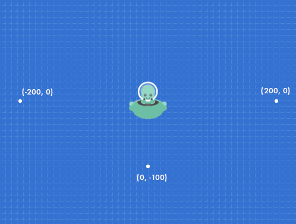
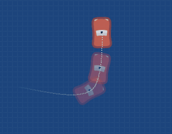
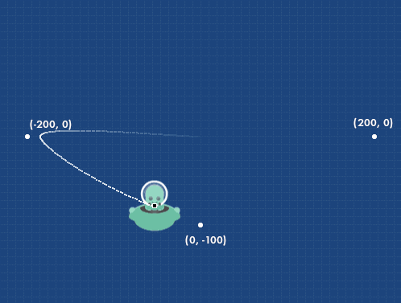
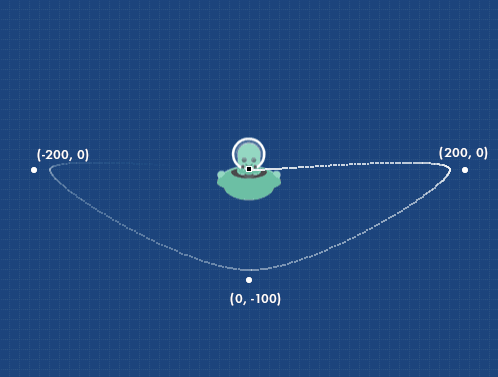

Покрокові інструкції дозволяють нам виконувати рухи актора дуже простим способом. Що нам потрібно зробити, так це перерахувати всі точки "x" та "y", які ми хочемо пройти, і викликати одну функцію.
Наприклад, уявіть, що у нас є корабель з прибульцем, і ми хочемо, щоб він рухався по екрану зліва направо.
Спочатку ми повинні зазначити, через які точки на екрані ми хочемо, щоб він проходив. Наприклад, спочатку корабель перемістимо у (x= -200, y=0), потім вниз у (x=0, y=-100), потім праворуч в (x=200, y=0) і, нарешті, повернемо у початкову точку (x=0, y=0):

Отже, викликаємо функцію hacer_recorrido всередині актора таким чином:
Перший параметр має бути списком із усіма координатами x та y, які ми хочемо пройти. Цей список повинен мати форму [x_точка_1, y_точка_1, x_точка_2, y_точка_2,...]
Другий аргумент, який в цьому прикладі є 7, має бути числом, яке вказує, скільки секунд триватиме рух. У цьому разі рух має тривати 7 секунд.
Передостанній аргумент - це число, яке вказує на кількість повторів цієї анімації. Якщо ми передамо 0, рух буде постійно повторюватися.
І останній аргумент вказує на те, чи повинен актор обертатися в напрямку руху чи ні. Корисно встановити для цього аргументу значення true, якщо актором є корабель, який видно згори, або автомобіль:

У результаті актор відвідає всі точки, але поступово, дотримуючись маршруту, зробить дуже плавну криву руху:

